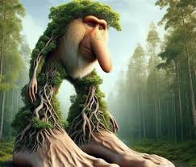
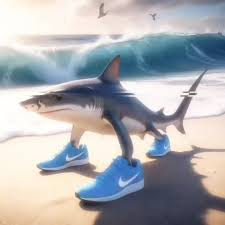

Últimamente se ha dado mucho de qué hablar en TikTok sobre unas criaturas creadas por Inteligencia Artificial (IA) en los que se muestra un video de un "bicho raro" con una canción relacionada a su nombre. 
Imagen ilustrativa sobre dicho "Brainrot"
El personaje de "Brr Brr Patapim" fue introducido por el usuario de TikTok @ofuscabreno el 17 de febrero de 2025 . En su video, presentó una imagen generada por inteligencia artificial de una criatura híbrida entre un babuino y un arbusto, con pies grandes y una nariz prominente. El video incluía una narración en italiano que decía: “Brr Brr Patapim, il mio cappello è pieno di Slim!” (“¡Brr Brr Patapim, mi sombrero está lleno de Slim!”). Esta combinación de imagen peculiar y audio llamativo contribuyó a la rápida viralización del contenido.
Tralalero Tralala es un tiburón antropomórfico con tres patas: dos que reemplazan sus aletas laterales y una tercera al final de su cola. En lugar de nadar como otros tiburones, se desplaza por el fondo marino con sorprendente agilidad. Para mayor singularidad, luce un par de elegantes zapatillas Nike azules, que le proporcionan agarre y una innegable arrogancia al navegar en las profundidades.
El personaje fue creado como parte de la serie "Animales con IA Brainrot" . una serie de memes de inteligencia artificial que presentan animales abstractos creados por IA ; cada uno de ellos tiene su propia imagen y sonido.
Son famosos por su rápida viralización con videos sin sentido creados con IA.